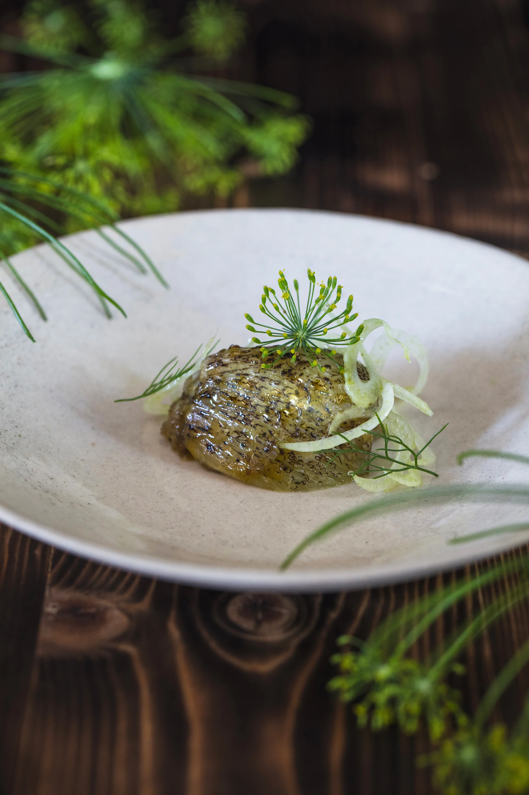
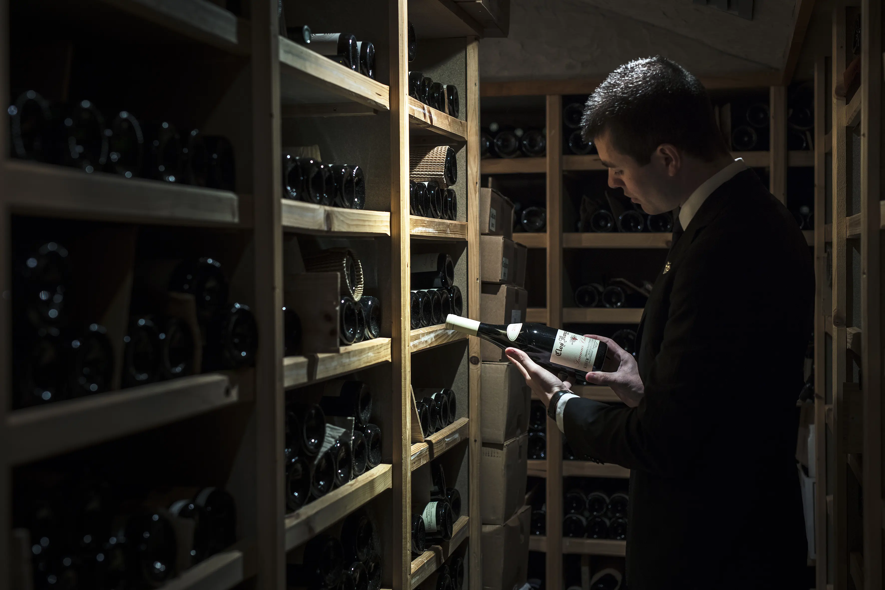

ÂME VÉGÉTAL ET LACUSTRE
Reflet d’un garde-manger nourricier, la cuisine, brut et authentique dessine ses lignes dans ses courbes sauvages et charnelles sans contour
Notre menu 


LA CUEILLETTE
Par le prisme culinaire, entre pudeur et force vitale, le monde du vivant s'exprime jusqu'à la quintesssence. Sublimé, il livre son émotion ultime
VERRE DU TERROIR
Explorer un territoire et rendre à la vigne la beauté des racines locales, les cépages d’ici, écho aux flacons d’ailleurs, la pertinence d’une équipe sommelière en totale cohérence
La carte des vins